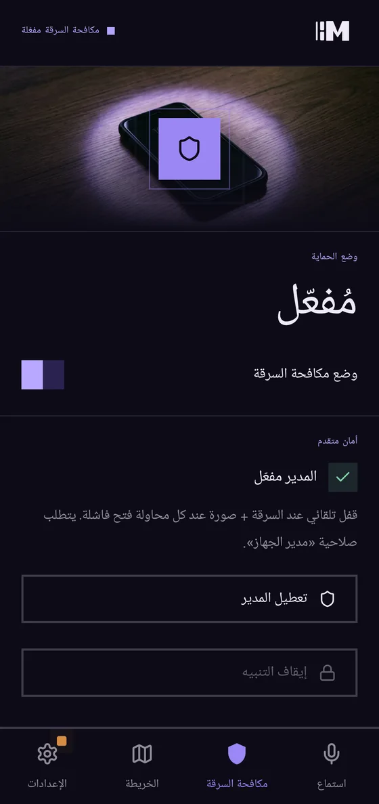

مكافحة السرقة
منبّه ضد السرقة لهواتف أندرويد
في المقهى أو المكتبة أو القطار، تضع هاتفك دقيقة. ومع تفعيل حماية HearMe، إذا أخذه أحد أو حرّكه يعمل المنبّه فورًا.
حمّل HearMe مجانًا افتح لوحة gethearme.me
كيف يعمل
- 01
فعّل الحماية
لمسة واحدة في التطبيق، ويظهر إشعار يدل على أن الحماية مفعّلة.
- 02
أحدهم يأخذ الهاتف
يكتشف HearMe الحركة ويعمل منبّه قوي.
- 03
يصلك التنبيه
تنبيه عبر Telegram (وبالبريد الإلكتروني إن فعّلته) مع موقع الهاتف.
ما يفعله HearMe
- لإيقاف المنبّه يجب فتح قفل الهاتف: لا يستطيع اللص إسكاته.
- صورة للشخص عند كل محاولة فتح فاشلة، تُرسل إلى Telegram وإلى لوحتك.
- قفل تلقائي عند السرقة (بإذن «مسؤول الجهاز»).
- تنبيهات عندما تكاد البطارية تنفد أو عند إطفاء الهاتف.
أسئلة شائعة
هل يعمل المنبّه إذا حرّكت الهاتف بنفسي؟
نعم إذا كانت الحماية مفعّلة. أوقفها قبل أخذ هاتفك، أو افتح القفل لإيقاف المنبّه.
هل يمكن تنبيه أقاربي؟
نعم. يمكنك ربط قريبين اثنين عبر Telegram، فتصلهم التنبيهات والصور والموقع.
هل الحماية من السرقة مجانية؟
نعم، منبّه السرقة جزء من التطبيق المجاني.